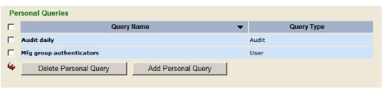
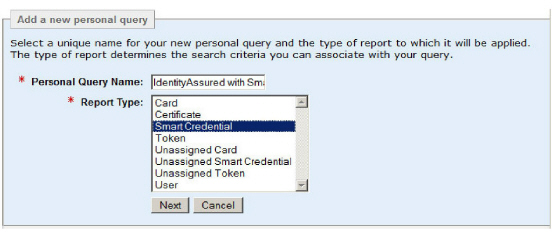
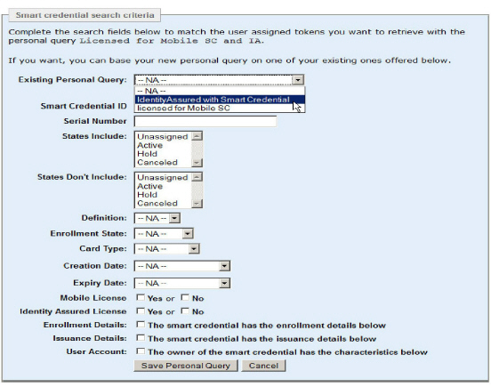

|
IdentityGuard Server 11.0 Administration Guide |
|
IdentityGuard Server 11.0 Administration Guide |
To create a personal report query
Note: You cannot create or use personal queries in the Master user shell.
1. Log in to the Entrust IdentityGuard Administration interface as the administrator.
 On the
Windows computer where Entrust IdentityGuard is installed
On the
Windows computer where Entrust IdentityGuard is installed
2. Click Reports.
3. Click Manage Personal Queries.
The Personal Queries screen appears. It displays the personal report queries if any exist.

4. To create a new Personal Query, click Add Personal Query.
The Add a new personal query screen appears.

5. In Personal Query Name, enter a name for your query.
6. In the Report Type list, select the type of report you are adding.
7. Click Next.
You see a different search criteria screen based on the type of report you are setting up. If you are adding a new smart credential report, for example, the Smart credential search criteria screen appears.

8. If you want to base your new query on an existing personal query, select the query from the Existing Personal Query drop-down list.
9. Select the search criteria for your report. The search criteria available depend on the type of report you are creating.
● If you are generating a Card report, select the Card search criteria.
For instructions on using the card search pane, see Finding grid card information.
● If you are generating a Certificate report, select the Certificate search criteria.
For instructions on using the certificate search pane, see Finding user certificates.
● If you are generating a Smart credential report, select the Smart credential search criteria.
For instructions on using the smart credential search pane, see the Entrust IdentityGuard Smart Credentials Guide.
● If you are generating a Token report, select the Token search criteria.
For instructions on using the token search pane, see Finding assigned token information .
● If you are generating an Unassigned Card report, select the Unassigned card search criteria.
For instructions on using the unassigned card search pane, see Finding unassigned grid card information.
● If you are generating an Unassigned Token report, select the Unassigned token search criteria.
For instructions on using the unassigned token search pane, see Finding unassigned token information .
● If you are generating a User report, select the User search criteria.
For instructions on using the user search pane, see To find users by user account information.
10. Click Save Personal Query.